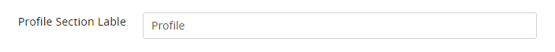

When ARMember Community is activated you will see two sub menus added in ARMember menu which are,
- Community Settings
- Community Activities
Community Settings
Start to setup ARMember - Community for your website from here. You have different options and facility to be enabled/disabled for community. Let's see each in detail.
Profile Section Label :
In case you have enabled to display section in tab from profile template, you can change the text to display for user profile tab at profile template.

There are another following options to enable/disable community sections from user's profile simultaneously which are described in individual sections.
No. of Records per Page
If you are displaying sections which contains multiple records then you may need pagination at there. So you can set number of records per page in pagination from here.
Pagination Style
Same way you can change pagination style at user profile for section containing multiple records.
Message section, Comment Listing and News Feed section will show Load More pagination style even if Numeric pagination style is selected.
Follow / Unfollow section will show Numeric pagination style even if Load More pagination style is selected.
Email Notification Settings
ARMember also provides facility to enable and configure email notification for different activities. For more detail please refer at Email Notification Settings.
Display sections in user profile :
After enable/disable community sections from Community Settings, to display sections from those enabled sections in user profile at front side please go to ARMember -> Profile & Directories -> Add / Edit Member Profile Template Page.
Here you can see new tab added at right sidebar labeled as Community Settings. It contains list of all community sections enabled at Community Settings page. You just need to switch on for particular section to be displayed in user profile.
Non-logged in users can view only profile, post and review. If they click on follower, following, activity or send friend request button then they will be redirected to ARMember login page.
Community Activities
You can manage all user's community activities here in individual three tabs, Manage User Posts, Manage User Reviews and Manage User Activities. Here you have filters and actions like spam, Delete etc.. which can be helpful to you.
{kind=link}
{kind=link}
{kind=link}
{kind=link}
{kind=link}
{kind=link}
{kind=link}
{kind=link}
{kind=link}
{kind=link}
{kind=link}
{kind=link}
{kind=link}